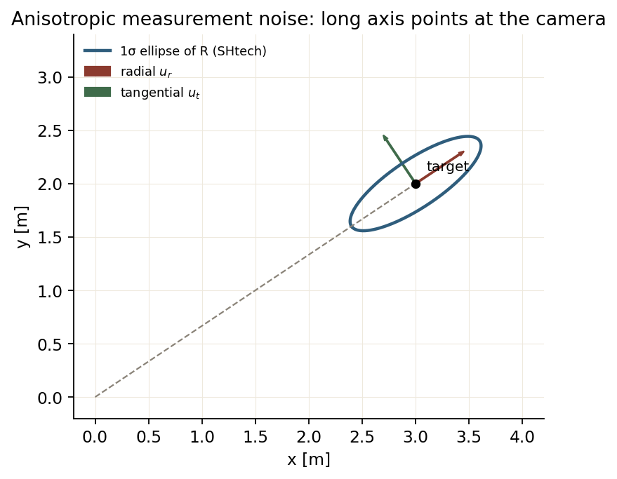
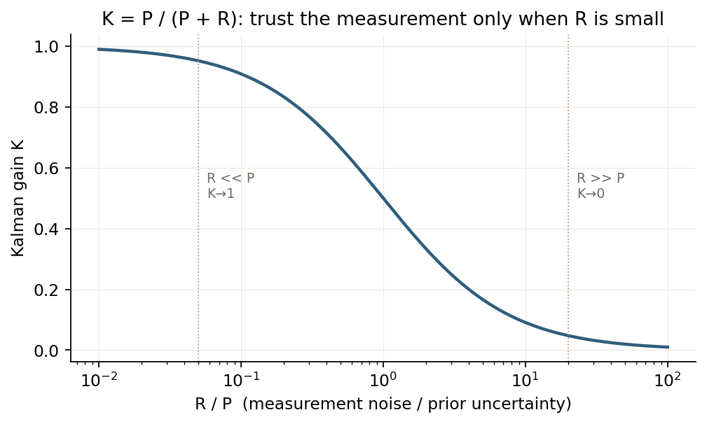
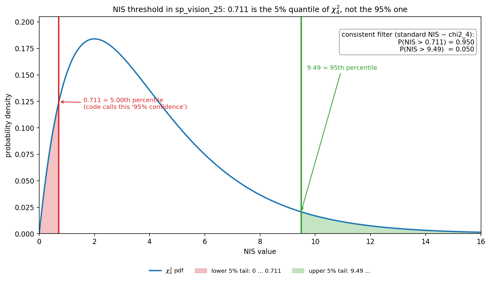

Lesson 0003 · 基础线
噪声：Q/R、马氏距离、NIS
这一节把“噪声”从“一个数”变成“有形状的协方差”，并解释 NIS 为什么能判断滤波器是否自洽。
1. 协方差不是“误差大小”，是“误差的形状”
一维方差只告诉你“分布有多宽”。二维协方差还告诉你“往哪个方向宽”：
P = [[σ_x², ρσ_xσ_y],
[ρσ_xσ_y, σ_y² ]]
它的特征向量是椭圆的轴，特征值的平方根是轴长。如果 P 不是对角阵，x 和 y 的误差是相关的：知道 x 偏大，就能推断 y 可能偏大。

R_xy = σ_r² u_r u_rᵀ + σ_t² u_t u_tᵀ：长轴沿径向（指向相机），短轴沿切向。因为深度误差比切向误差大得多，椭圆被“拉长”在视线上。图由 assets/make_course_figures.py 生成。2. Q 和 R：一个管“模型多不靠谱”，一个管“观测多不靠谱”
一维直觉：
K = P / (P + R)
R大：观测不可信 →K小 → 更信预测 → 曲线更平滑，但响应慢；Q大：预测不可信 →P大 →K大 → 更信观测 → 跟踪更“活”，但更容易被噪声带跑。

K=P/(P+R) 随 R/P 的变化。调参时不要孤立地看 Q 或 R，要看它们的比值。图由 assets/make_course_figures.py 生成。Q 里的 dt⁴/4、dt³/2、dt² 从哪来
假设加速度是白噪声，方差 σ_a²，在 dt 内近似常数：
p⁺ = p + v dt + 0.5 a dt²
v⁺ = v + a dt
G = [0.5 dt², dt]ᵀ
Q = G σ_a² Gᵀ = σ_a² [[dt⁴/4, dt³/2],
[dt³/2, dt² ]]
这就是 sp/SHtech 的 Q 块。wuhan 多做了一步：把车体系的 σ_a² 旋转到世界系，Q_acc_odom = R Q_body Rᵀ，因为加速度噪声是相对车体的（前后/左右/上下），不是相对世界的。
3. 马氏距离：把“误差”除以“不确定性”
欧氏距离 ||x - μ|| 把所有方向同等看待。马氏距离：
d_M(x) = sqrt( (x-μ)ᵀ Σ⁻¹ (x-μ) )
它先把空间“白化”：沿方差大的方向，同样的偏差更“正常”；沿方差小的方向，一点点偏差就很异常。NIS 就是创新 y = z - h(x⁻) 的马氏距离平方：
NIS = yᵀ S⁻¹ y, S = H P⁻ Hᵀ + R
如果模型和噪声都设对了，NIS ~ χ²(m)，m 是观测维度。注意：NIS 的期望是 m，不是 0。4 维观测，健康时 NIS 平均约 4。

verify/verify_kf.py 生成。4. 一个具体的阈值陷阱
sp 的 EKF 里：
constexpr double nis_threshold = 0.711; // 注释：自由度=4，置信水平95%
4 自由度的 χ² 分布：
5% 下分位 ≈ 0.711 95% 上分位 ≈ 9.488 均值 = 4
0.711 是“只有 5% 的概率低于它”的下分位，不是 95% 上分位。如果用 NIS > 0.711 判失败，一个健康的滤波器大约有 95% 的帧会被判失败。这不一定代表实际代码一定出错（可能 R 被放大，NIS 长期偏小），但注释和数值明显对不上，值得核对。

verify/verify_projects.py 生成。5. 三套代码的 R 为什么不一样
| 项目 | R 的形式 | 物理直觉 |
|---|---|---|
| sp | diag(4e-3, 4e-3, log|Δθ|+1, log|pitch|+1/200+0.09) | 斜视角越大，PnP 深度越不可信；距离噪声随俯仰略增 |
| wuhan | diag(σ_angle²/2, σ_px²/2, σ_px²/2, σ_len²/2)，σ_px∝L_px | 灯条越长（越近），像素噪声绝对量越大；角度噪声固定 |
| SHtech | σ_r²u_ru_rᵀ + σ_t²u_tu_tᵀ，σ_r=0.2d，σ_t=0.0628d | 径向深度误差 20%，切向是 3.6° 角度误差乘距离 |
三种做法的共同点：R 不是拍脑袋的常数，而是随距离/视角/像素长度变化的。这也是为什么同一个 Q 在不同距离下表现不一样——误差的“形状”变了。
6. NEES：检查状态估计是否自洽
NIS 检查“观测残差”，NEES 检查“状态误差”：
NEES = (x - x̂)ᵀ P⁻¹ (x - x̂)
真值未知时没法直接算 NEES，只能用蒙特卡洛仿真。如果 NEES 长期大于 χ² 上界，说明 P 太小（滤波器过度自信）；长期小于下界，说明 P 太大（滤波器不够自信）。这比“看曲线抖不抖”客观得多。
0.711 是 χ²₄ 的 5% 下分位；
健康滤波器有 95% 的帧会超过它。见 verify/verify_kf.py 和 verify/projects_report.md。
7. 三问自检
1. 4 维观测、滤波器完全自洽时，NIS 的期望是？
2. SHtech 的 R 椭圆长轴为什么指向相机？
3. 把 Q 调得很小，最直接的后果是？